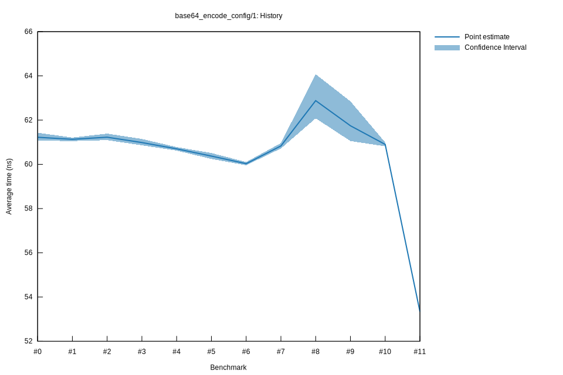

# 112022-10-16T19:51:50+03:00
|
Lower Bound |
Estimate |
Upper Bound |
| Value: |
53.30ns |
53.34ns |
53.38ns |
| Throughput: |
53.68MiB/s |
53.64MiB/s |
53.60MiB/s |
| Change in Value: |
-12.551% |
-12.375% |
-12.206% |
| Change in Throughput: |
+14.352% |
+14.122% |
+13.902% |
No change in performance detected.
# 102022-10-16T17:13:46+03:00
|
Lower Bound |
Estimate |
Upper Bound |
| Value: |
60.82ns |
60.90ns |
60.99ns |
| Throughput: |
47.04MiB/s |
46.98MiB/s |
46.91MiB/s |
| Change in Value: |
-4.1205% |
-1.7492% |
-0.1954% |
| Change in Throughput: |
+4.2976% |
+1.7803% |
+0.1958% |
Change within noise threshold.
# 92022-10-15T17:08:30+03:00
|
Lower Bound |
Estimate |
Upper Bound |
| Value: |
61.05ns |
61.74ns |
62.85ns |
| Throughput: |
46.86MiB/s |
46.34MiB/s |
45.52MiB/s |
| Change in Value: |
-18.538% |
-13.429% |
-7.9312% |
| Change in Throughput: |
+22.756% |
+15.512% |
+8.6145% |
No change in performance detected.
# 82022-10-15T17:04:56+03:00
|
Lower Bound |
Estimate |
Upper Bound |
| Value: |
62.08ns |
62.88ns |
64.07ns |
| Throughput: |
46.08MiB/s |
45.50MiB/s |
44.65MiB/s |
| Change in Value: |
+11.440% |
+17.670% |
+24.158% |
| Change in Throughput: |
-10.266% |
-15.016% |
-19.457% |
No change in performance detected.
# 72022-10-15T16:44:07+03:00
|
Lower Bound |
Estimate |
Upper Bound |
| Value: |
60.72ns |
60.83ns |
60.96ns |
| Throughput: |
47.12MiB/s |
47.03MiB/s |
46.93MiB/s |
| Change in Value: |
+0.9426% |
+1.2394% |
+1.5791% |
| Change in Throughput: |
-0.9338% |
-1.2242% |
-1.5545% |
No change in performance detected.
# 62022-10-08T17:22:14+03:00
|
Lower Bound |
Estimate |
Upper Bound |
| Value: |
59.96ns |
60.03ns |
60.10ns |
| Throughput: |
47.72MiB/s |
47.66MiB/s |
47.60MiB/s |
| Change in Value: |
-0.6725% |
-0.3409% |
-0.0319% |
| Change in Throughput: |
+0.6770% |
+0.3420% |
+0.0319% |
No change in performance detected.
# 52022-10-08T17:03:29+03:00
|
Lower Bound |
Estimate |
Upper Bound |
| Value: |
60.24ns |
60.37ns |
60.51ns |
| Throughput: |
47.49MiB/s |
47.39MiB/s |
47.28MiB/s |
| Change in Value: |
-0.8613% |
-0.5688% |
-0.2946% |
| Change in Throughput: |
+0.8688% |
+0.5721% |
+0.2955% |
No change in performance detected.
# 42022-10-08T16:58:37+03:00
|
Lower Bound |
Estimate |
Upper Bound |
| Value: |
60.62ns |
60.70ns |
60.78ns |
| Throughput: |
47.20MiB/s |
47.13MiB/s |
47.07MiB/s |
# 32022-10-08T16:57:46+03:00
|
Lower Bound |
Estimate |
Upper Bound |
| Value: |
60.86ns |
60.98ns |
61.15ns |
| Throughput: |
47.01MiB/s |
46.91MiB/s |
46.79MiB/s |
| Change in Value: |
-0.7394% |
-0.4686% |
-0.1684% |
| Change in Throughput: |
+0.7449% |
+0.4708% |
+0.1687% |
No change in performance detected.
# 22022-10-08T16:52:48+03:00
|
Lower Bound |
Estimate |
Upper Bound |
| Value: |
61.09ns |
61.23ns |
61.39ns |
| Throughput: |
46.83MiB/s |
46.73MiB/s |
46.60MiB/s |
| Change in Value: |
-1.2216% |
-0.4994% |
+0.0691% |
| Change in Throughput: |
+1.2367% |
+0.5019% |
-0.0691% |
Change within noise threshold.
# 12022-10-08T16:52:11+03:00
|
Lower Bound |
Estimate |
Upper Bound |
| Value: |
61.05ns |
61.13ns |
61.21ns |
| Throughput: |
46.86MiB/s |
46.80MiB/s |
46.74MiB/s |
| Change in Value: |
-1.6160% |
-0.4150% |
+0.6376% |
| Change in Throughput: |
+1.6426% |
+0.4167% |
-0.6336% |
Change within noise threshold.
# 02022-10-08T16:51:14+03:00
|
Lower Bound |
Estimate |
Upper Bound |
| Value: |
61.07ns |
61.22ns |
61.43ns |
| Throughput: |
46.85MiB/s |
46.73MiB/s |
46.57MiB/s |